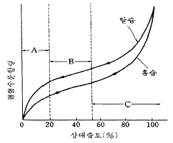

식품산업기사(구) (2004-03-07 기출문제)
1과목: 식품위생학
1. 미강유의 탈취공정에서 열매개체로 사용된 물질이 미강유 중에 혼입되어 큰 중독증상을 일으킨 사건은?
- 이타이 이타이 병
- 미나마타 병
- PCB 중독
- 황변미 중독
(정답률: 알수없음)

2. 어떤 물질의 LD50 값이 적다는 것이 의미하는 것은?
- 독성이 작다.
- 독성이 크다.
- 보존성이 작다.
- 보존성이 크다.
(정답률: 알수없음)
3. 농약에 의한 식품오염을 설명한 것 중 잘못된 것은?
- 수확 직전에 사용하는 경우 다량이 농작물에 잔류 한다.
- 정상적인 사용법에 맞게 사용하는 경우에는 위생상 문제가 되지 않는다.
- 사용된 농약이 목초사료에 혼입하여 동물성 식품에 축적될 수 있다.
- 유기염소제는 체내 축적성이 크다.
(정답률: 알수없음)
4. 어패류 생식이 주된 원인이며 세균성 이질과 비슷한 증상을 나타내는 식중독균은?
- 병원성 대장균
- 보툴리누스균
- 장구균
- 장염비브리오균
(정답률: 알수없음)
5. 유기인제는 다음 중 어느 효소와 작용하여 중독을 일으키는가?
- cytochrome oxidase
- hemoglobin oxidase
- acetylcholine synthetase
- choline esterase
(정답률: 알수없음)
6. 잠복기가 가장 짧은 식중독은?
- 살모넬라 식중독
- 장염비브리오 식중독
- 포도상구균 식중독
- 아리조나 식중독
(정답률: 알수없음)
7. 훈연식품에서 생성되기 쉬운 발암성 물질은?
- 니트로스아민(nitrosamine)
- 다환 방향족 탄화수소(polycyclic aromatic hydrocarbon)
- 피.씨.비(P.C.B:polychlorinated biphenyl)
- 중합체(polymer)
(정답률: 알수없음)
8. 종이류 등의 용기나 포장에서 위생 문제를 야기시킬 수 있는 대표적인 물질은?
- Formalin 의 용출
- 형광염료의 용출
- BHA의 용출
- PCB의 용출
(정답률: 알수없음)
9. 채소를 통하여 매개하는 기생충과 거리가 먼 것은?
- 편충
- 요충
- 선모충
- 회충
(정답률: 알수없음)
10. 피부감염이 가능한 기생충은?
- 회충
- 십이지장충
- 편충
- 요충
(정답률: 알수없음)
11. 간디스토마의 제 1 중간숙주는?
- 붕어
- 우렁이
- 가재
- 은어
(정답률: 알수없음)
12. 실험 동물에 시험하고자 하는 화학물질을 1∼2주간 걸쳐 관찰하는 독성 시험은?
- 급성 독성시험
- 아급성 독성시험
- 경구아만성 독성시험
- 경구만성 독성시험
(정답률: 알수없음)
13. 최확수(MPN)법의 검사와 가장 관계 깊은 것은?
- 대장균군 검사
- 부패 검사
- 식중독 검사
- 타액 검사
(정답률: 알수없음)
14. 식품첨가물로서 사용이 금지된 감미료는?
- D-sorbitol
- disodium glycyrrhizinate
- cyclamate
- aspartame
(정답률: 알수없음)
15. 식품 첨가물로서 규소수지의 사용 용도는?
- 소포제
- 껌 기초제
- 유화제
- 호료
(정답률: 알수없음)
16. 아미그달린(amygdalin)이라는 독소를 함유하고 있는 것은?
- 감자
- 청매(덜 익은 매실)
- 독버섯
- 독미나리
(정답률: 알수없음)
17. A - 5 - 2 - 2450 살모넬라균 식중독의 감염원이 아닌 것은?
- 달걀
- 어육, 연제품
- 과실
- 우유 및 유제품
(정답률: 알수없음)
18. 방사능 핵종 중 Sr-90이 식품위생상 가장 크게 문제가 되는 이유는?
- 물리적 반감기가 짧기 때문이다.
- 생물학적 반감기가 짧기 때문이다.
- 실효(유효) 반감기가 길기 때문이다.
- 물리학적 반감기가 짧기 때문이다.
(정답률: 알수없음)
19. 포름알데히드(formaldehyde)가 용출 될 염려가 없는 합성수지인 것은?
- 페놀수지
- 요소수지
- 멜라닌수지
- 염화비닐수지
(정답률: 알수없음)
20. 식품위생 검사에서 생균수를 측정하는 목적은?
- 신선도의 판정
- 식중독균의 오염 여부 확인
- 전염병균의 이환 여부 확인
- 분변 오염의 여부 확인
(정답률: 알수없음)
2과목: 식품화학
21. 효소적 갈변반응이 일어나기 위해 반드시 필요한 요소가 아닌 것은?
- 효소
- 기질
- 열
- 산소
(정답률: 알수없음)
22. 아밀로오스 분자의 비환원성 말단에 작용하여 맥아당 단위로 가수분해하는 효소는?
- α -amylase
- β -amylase
- Glucoamylase
- Isoamylase
(정답률: 알수없음)
23. 다음 중 양파의 최루성분은?
- allicin
- thiopropionaldehyde
- quercetin
- propylmercaptane
(정답률: 알수없음)
24. 쓴맛 물질의 식품소재가 잘못 연결된 것은?
- 테오브로민(theobromine) - 코코아
- 휴물론(humulone) - 맥주
- 나린진(naringin) - 감귤류
- 리모닌(limonin) - 도토리
(정답률: 알수없음)
25. 유지를 가열하였을 때 점도가 증가하는 것과 가장 관계가 깊은 것은?
- 효소에 의한 가수분해
- 유지의 열분해
- 유지의 산패
- 유지의 중합
(정답률: 알수없음)
26. 다음 중 결핍되면 혈관의 침투성이 커져서 혈액이 침투되어 피부에 반점이 생기는 결핍증을 나타내는 비타민이 많이 들어 있는 식품은 어느 것인가?
- 간
- 딸기
- 귤껍질
- 식용유
(정답률: 알수없음)
27. 다음은 유화제가 지니는 기능기들이다. 소수성기는 어느것인가?
- -OH
- -COOH
- -NH2
- -CH2-CH2-CH3
(정답률: 알수없음)
28. 다음 설명 중 관상동맥질환의 위험이 낮은 경우에 해당되는 것은?
- 혈중 LDL이 HDL 보다 높은 수준일 때
- 혈중 HDL이 LDL 보다 높은 수준일 때
- 혈중 VLDL이 HDL 보다 높은 수준일 때
- 혈중 LDL이 VLDL 보다 높은 수준일 때
(정답률: 알수없음)
29. 65세 여자 노인의 1일 단백질권장량과 동일한 단백질권장량을 갖는 연령은?
- 7 - 9세
- 10 - 12세
- 13 - 15세
- 16 - 19세
(정답률: 알수없음)
30. 아미노 카르보닐(amino-carbonyl) 반응에서 생성되는 물질은?
- melanin
- caramel
- dextrin
- melanoidin
(정답률: 알수없음)
31. 34.2%(w/w) 설탕을 함유한 수용액의 수분 활성도(Aw)는? (단, 설탕 분자량:342, 물의 활성도 계수:1)
- 1.0
- 0.97
- 0.95
- 0.85
(정답률: 알수없음)
32. 생선의 신선도 측정에 이용되는 성분은?
- 아세트알데히드(acetaldehyde)
- 트리메틸아민(trimethylamine)
- 포름알데히드(formaldehyde)
- 디아세틸(diacetyl)
(정답률: 알수없음)
33. 미생물의 발효에 의해 독특한 향기를 갖는 식품은?
- 후숙된 과실
- 불고기
- 청주
- 비스킷
(정답률: 알수없음)
34. 다음 그림은 지방이 매우 적은 식품의 전형적인 등온흡습곡선이다. 이와 관련된 다음 설명 중 틀린 것은?

- 식품이 놓여져 있는 환경의 상대습도가 높아질수록 식품의 수분함량은 증가한다.
- A 영역은 식품 중의 수분이 단분자층을 형성하고 있는 부분이다.
- A 영역의 수분은 식품 중의 아미노(amino)기나 카르복실(carboxyl)기 등과 강하게 이온결합하고 있다.
- A 영역은 식품의 수분함량이 낮기 때문에 식품의 저장성이 가장 높다.
(정답률: 알수없음)
35. 비타민 B1(thiamin)에 대한 설명 중 틀린 것은?
- 마늘에 매운맛 성분인 알리신(allicin)과 결합한 알리티아민(allithiamin) 형태가 있다.
- 당질대사에 관여하므로 탄수화물 섭취량에 비례하여 요구된다.
- 생체 내의 산화 환원 효소에 관여하는 조효소로 작용한다.
- 결핍되면 각기병 또는 신경염 증상을 보인다.
(정답률: 알수없음)
36. 마이야르 반응(Maillard reaction)에서 가장 먼저 시작하는 반응은?
- 당류와 아미노 화합물의 축합반응
- 아마도리(Amadori) 전위
- 알돌(Aldol)형 축합반응
- 스트레커(Strecker)형 반응
(정답률: 알수없음)
37. 단맛을 내는 물질이 아닌 것은?
- 아스파탐(Aspartame)
- 페릴라르틴(Perillartine)
- 스테비오사이드(Stevioside)
- 글루타치온(Glutathione)
(정답률: 알수없음)
38. 인체의 골격과 치아를 튼튼하게 하고 충치를 예방해 주는 무기질은?
- 칼슘
- 철
- 칼륨
- 불소
(정답률: 알수없음)
39. 분자내에 이중결합을 3개 가지고 있는 지방산은 어느것인가?
- 스테아린산(stearic acid)
- 올레인산(oleic acid)
- 리놀레인산(linoleic acid)
- 리놀레닌산(linolenic acid)
(정답률: 알수없음)
40. 점탄성체의 측정 장치로 적당하지 않은 것은?
- 경점성 - farinograph
- 신전성 - extensograph
- 연도 - tendermeter
- 바이센베르그 효과 - texturometer
(정답률: 알수없음)
3과목: 식품가공학
41. 고기의 신선도를 유지하기 위하여 냉동법으로 저장한 경우 얼음결정에 의하여 발생할 수 있는 변화가 아닌 것은?
- 근육조직 손상
- 탈수
- 산패
- 부피감소
(정답률: 알수없음)
42. 밀가루를 점탄성이 강한 반죽으로 만들려면 어떻게 하면 좋은가?
- 과도한 혼합을 한다.
- 가루를 숙성, 산화시킨다.
- 회분함량이 많은 전분을 사용한다.
- 글루텐 함량이 적은 강력분을 사용한다.
(정답률: 알수없음)
43. 건면류를 제조할 때 소금을 사용하는 목적과 거리가 먼 것은?
- 색도변화 유도
- 밀가루의 점탄성 증진
- 면선의 건조 속도 조절
- 제품의 변질방지
(정답률: 알수없음)
44. 두부제조시 두부응고제로 부적당한 것은?
- CaSO4
- MgCl2
- CaCO3
- CaCl2
(정답률: 알수없음)
45. 간장덧 관리에서 교반을 해야 하는 직접적인 이유가 아닌 것은?
- 숙성작용이 고르게 일어나게 한다.
- 간장의 색을 좋게 한다.
- 코오지 중 효소용출을 촉진시킨다.
- 이산화탄소를 배제하여 발효를 조장시킨다.
(정답률: 알수없음)
46. 사이클로덱스트린(cyclodextrin)에 대한 설명 중 옳지 않은 것은?
- 물에 잘 녹지 않는다.
- 지방의 유화성 및 기포성을 향상시킨다.
- 사이클로덱스트린의 내부는 친수성으로 계면활성적 성질을 갖는다.
- 식품의 분말화에 이용된다.
(정답률: 알수없음)
47. 침채류(沈菜類) 제조시 정제염보다 호염이 갖는 장점은?
- 잘 녹아 방부작용이 크다.
- 조직을 단단하게 하여 질을 높일 수 있다.
- 숙성 속도를 빠르게 하고 맛을 좋게 한다.
- 연부를 방지하고 비타민의 파괴를 방지한다.
(정답률: 알수없음)
48. 아미노산 간장의 제조에서 탈지대두박 등의 단백질 원료를 가수분해하는데 사용되는 산은?
- 황산
- 수산
- 염산
- 질산
(정답률: 알수없음)
49. 치즈의 숙성률(熟成率)을 나타내는 기준이 되는 성분은?
- 수용성 질소화합물
- 유리 지방산
- 유리 아미노산
- 환원당
(정답률: 90%)
50. 농축 토마토에 식염, 식초, 당류, 마늘 및 향신료 등을 첨가하여 조미한 것으로 전체 고형분이 25% 이상인 제품의 명칭은?
- 토마토 페이스트(tomato paste)
- 토마토 쥬스(tomato juice)
- 토마토 퓨레(tomato puree)
- 토마토 케첩(tomato ketchup)
(정답률: 알수없음)
51. 간장 코오지 제조시 밀을 볶아 첨가하는 이유가 아닌 것은?
- 간장의 향기 및 빛깔을 좋게 한다.
- 밀의 녹말을 호화시켜 코오지균의 번식을 좋게 한다.
- 찐콩의 수분을 흡수한다.
- 잡균의 번식을 억제하고 코오지의 저장성을 높인다.
(정답률: 알수없음)
52. HTST법(고온 단시간 살균법)은 72∼75℃에서 얼마 동안 열처리 하는 것이 가장 적당한가?
- 1초간
- 15초간
- 1분간
- 5분간
(정답률: 알수없음)
53. 식육제품을 포장했을 때 식용이 가능한 포장재(casing)는 어느 것인가?
- 셀룰로오스(cellulose) 케이싱
- 콜라겐(collagen) 케이싱
- 셀로판(cellophane) 케이싱
- 화이브러스(fibrous) 케이싱
(정답률: 알수없음)
54. 냉동식품의 포장재료의 필수 구비조건이 아닌 것은?
- 방습성이 있어야 함
- 가스 투과성이 높아야 함
- 유연성이 있어야 함
- 가열 수축성이 있어야 함
(정답률: 알수없음)
55. 원료크림의 지방량이 80kg인데 생산된 버터(butter)의 양이 100kg이라면 버터의 증량율(overrun)은?
- 5%
- 15%
- 25%
- 80%
(정답률: 알수없음)
56. 식육가공에서 훈연침투속도에 영향을 미치지 않는 것은?
- 훈연 농도
- 훈연재의 색상
- 훈연실의 공기속도
- 훈연실의 상대습도
(정답률: 알수없음)
57. 육류 단백질의 냉동변성을 일으키는 요인이 아닌 것은?
- 염석(salting out)
- 응집(coagulation)
- 빙결정(ice crystal)
- 유화(emulsion)
(정답률: 알수없음)
58. 분유에 대한 설명 중 틀린 것은?
- 분유는 생유를 농축한 후 분무건조한 것이다.
- 전지분유는 원유의 지방함량을 조절하지 않고 그대로 분말화 한 것이다.
- 조제분유는 우유 또는 유제품에 유아에 필요한 영양소를 첨가하여 분말로 만든 것이다.
- 장기저장에 적합한 분유의 수분함량은 9∼10%이다.
(정답률: 알수없음)
59. 유지작물로부터 식용 유지를 추출할 때 가장 많이 사용하는 용매는?
- 헵탄(heptane)
- 핵산(hexane)
- 벤젠(benzene)
- 에테르(ether)
(정답률: 알수없음)
60. 유지의 탈색공정 방법으로 사용되지 않는 것은?
- 수증기 증류법
- 활성백토법
- 산성백토법
- 활성탄법
(정답률: 알수없음)
4과목: 식품미생물학
61. 발효주에 대한 설명으로 틀린 것은?
- 단발효주와 복발효주로 나눈다.
- 복발효주는 단행 복발효주와 병행 복발효주가 있다.
- 맥주는 단행 복발효주이다.
- 과실주는 병행 복발효주이다.
(정답률: 알수없음)
62. 조류(藻類)에 관한 설명 중 틀린 것은?
- 광합성 작용을 한다.
- 진핵세포 생물이다.
- 색소 및 저장물질의 종류 등으로 분류한다.
- 동물성 플랑크톤이다.
(정답률: 알수없음)
63. 세균의 증식은 주로 어떤 방법에 의하는가?
- 유성 생식
- 출아 연결 번식
- 포자 형성
- 세포 분열법
(정답률: 알수없음)
64. 직접 산화에 의하여 유기산 발효를 하는 것은?
- 구연산 발효
- 초산 발효
- 호박산 발효
- 푸말산 발효
(정답률: 알수없음)
65. 세균의 포자에만 존재하는 물질로써 내열성을 부여하는 저분자화합물은?
- peptidoglycan
- dipicolinic acid
- lipopolysaccharide(LPS)
- muraminic acid
(정답률: 알수없음)
66. 김치 발효에 주로 관여하는 세균은?
- Lactobacillus casei
- Lactobacillus plantarum
- Lactobacillus bulgaricus
- Lactobacillus heterohiochii
(정답률: 알수없음)
67. 균체를 배양한 SCP(single cell protein)를 식사료로 이용하고자 한다. 배양 원료와 균주의 상관 관계가 잘못된 것은?
- 석유 - Candida tropicalis
- 아황산 펄프 폐액 - Candida utilis
- 메탄올 - Leuconostoc mesenteroides
- 폐당밀 - Saccharomyces cerevisiae
(정답률: 알수없음)
68. 발효식품과 주발효 미생물이 잘못 연결된 것은?
- 간장 - Aspergillus oryzae
- 청국장 - Bacillus natto
- 개량 메주 - Aspergillus oryzae
- 전통 메주 - Saccharomyces coreanus
(정답률: 알수없음)
69. 통조림 살균시에 가장 주의하여야 하는 세균은?
- Pediococcus halophilus
- Bacillus subtilis
- Clostridium sporogenes
- Streptococcus lactis
(정답률: 알수없음)
70. 곰팡이의 분류시 가장 먼저 고려해야 할 사항은?
- 당류의 자화성
- 산소 요구도
- 포자의 생성 유무
- 균사의 격벽(septa)의 유무
(정답률: 알수없음)
71. Gram 양성이며 포자를 형성하는 편성혐기성균은?
- Bacillus 속
- Clostridium 속
- Escherichia 속
- Corynebacterium 속
(정답률: 알수없음)
72. 간장에 독특한 향미를 부여하는 간장의 주 발효 효모는?
- Saccharomyces cerevisiae
- Saccharomyces rouxii
- Saccharomyces diastaticus
- Saccharomyces carlsbergensis
(정답률: 알수없음)
73. 탄수화물 대사의 EMP 경로(glycolysis)에 해당되는 사항이 아닌 것은?
- 포도당에서 젖산이 생성될 때까지의 반응이다.
- 혐기성 반응의 경로이다.
- ATP 생성이 TCA cycle 에서 보다 적다.
- 미토콘드리아(mitochondria) 내에서 일어난다.
(정답률: 알수없음)
74. 일본청주 양조에 이용되는 곰팡이의 속은?
- Aspergillus 속
- Mucor 속
- Rhizopus 속
- Penicillium 속
(정답률: 알수없음)
75. 빵 효모 세포의 형태는?
- 계란형
- 막대형
- 나선형
- 균사형
(정답률: 알수없음)
76. 콩제국 중 온도가 50℃ 이상으로 상승되면 활발히 증식되는 균속은?
- Micrococcus 속
- Clostridium 속
- Bacillus 속
- Lactobacillus 속
(정답률: 알수없음)
77. 담자균류 균사의 특징인 균반(또는 취상돌기, clamp connection)이 형성되는 시기는?
- 1차균사
- 2차균사
- 3차균사
- 4차균사
(정답률: 알수없음)
78. 토양이나 식품에서 자주 발견되고 aflatoxin이라는 발암성 물질을 생성하는 유해 곰팡이는?
- Aspergillus flavus
- Aspergillus niger
- Aspergillus oryzae
- Aspergillus sojae
(정답률: 알수없음)
79. 미생물의 균주 개량법에 속하지 않는 것은?
- 단포자 분리법
- 인공 돌연변이법
- Lindner 소적법
- Heterocaryon 교잡법
(정답률: 알수없음)
80. 다음 중 무포자 효모는?
- Torulopsis 속
- Endomycopsis 속
- Saccharomyces 속
- Hansenula 속
(정답률: 알수없음)